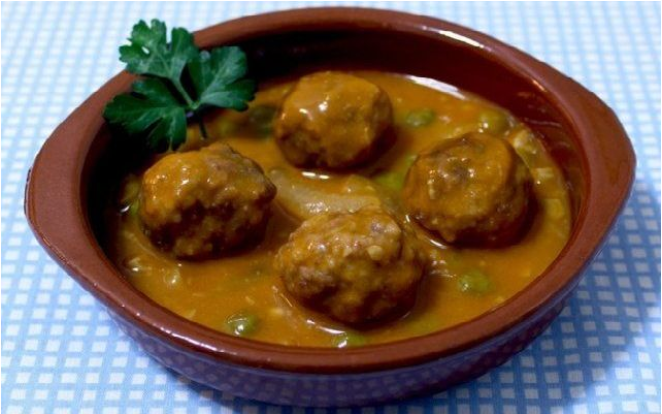

Albóndigas caseras
Ingredientes
- 1 Kg de carne picada de ternera
- ajos al gusto
- 2-3 huevos batidos
- perejil al gusto
- orégano al gusto
- sal
- zanahorias crtadas en rodajas
- cebollas cortadas en trozos pequeños
- setas / champiñones de lata
- un buen puñado de guisantes congelados
- 2 tomates rojos
- azafrán
- una pastilla de verduras
- pan rallado
- harina
- aceite
Preparación
Para hacer las albóndigas echaremos en un bol la carne picada, el ajo picado, un poco de perejil, los huevos batidos y pan rallado.
Salpimentar. Se puede añadir un poco de orégano, pimienta u otra especia que os guste.
Hacer bolas redondas con las manos y pasarlas por harina. Quitar el exceso de harina.
Freír las albóndigas en aceite caliente y reservar.
Pochar la cebolla, añadir los tomates triturados y salpimentar. Dejar cocer hasta que esté bien pochado.
Añadir el sofirto a las albóndigas, cubrirlas de agua y esperar a que hierva.
Añadir los guisantes y las zanahorias, desmenuzar la pastilla de verduras y añadir el azafrán.
Hervir a fuego lento hasta que esté hecha la verdura añadiendo en el último momento las setas/champiñones.
Y ya tenemos nuestras albóndigas caseras a punto!